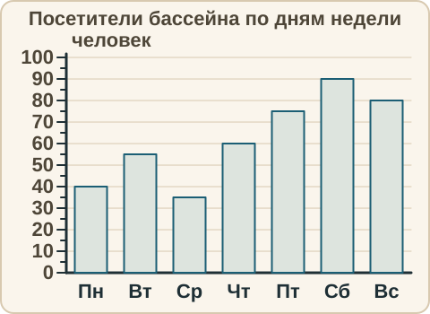
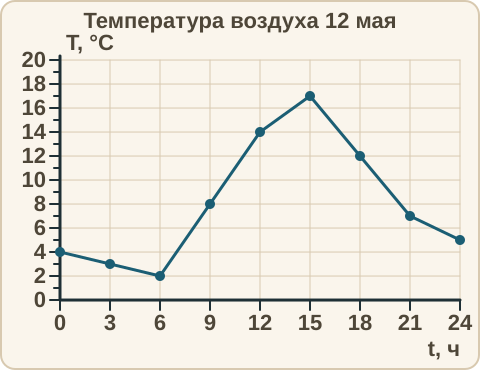
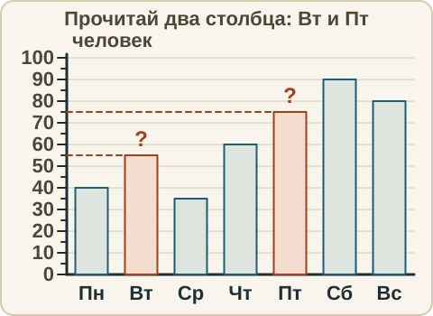

Математика: база · занятие 17Столбчатая диаграмма и график
Цель: ты читаешь значение по диаграмме и по графику, находишь наибольшее и наименьшее, видишь рост и падение. Это задания 1–5 ОГЭ (схемы, диаграммы) и основа для чтения графиков функций дальше. Ответы и подсказки спрятаны: сначала реши сам, потом нажми кнопку.
Как записывать ответ. Число — целое число. Дробь — через черту и сокращённая до конца, например 3/4. Смешанное число — целая часть, пробел, дробь, например 2 3/4. Десятичная дробь — с запятой, например 3,25. Ответ по диаграмме и графику — число в тех единицах, которые подписаны на оси.
Вспомнить
Без подсказок, сразу проверка. Отмечай, на чём споткнулся, — в журнал.
- «Дом» стоит 600 рублей в месяц. Сколько рублей за 4 месяца?
- «Старт» стоит 450 рублей в месяц, «Дом» — 600. На сколько рублей «Дом» дороже?
- 2/3 : 4/9
- 2,5 · 1,2
- 35 % от 80
- 6/x = 9/15. Найди x.
Беглость: цена деления
Игра «цена деления». Цена деления шкалы — это число, на которое меняется значение от одной чёрточки к соседней. Чтобы найти её, берём два соседних подписанных числа, вычитаем и делим на число промежутков между ними. Ошибся — пример вернётся: попробуй ещё раз. Без таймера.
- Между отметками 20 и 30 пять промежутков. Чему равна цена деления?
- Между отметками 100 и 200 четыре промежутка. Чему равна цена деления?
- Между отметками 0 и 1 десять промежутков. Чему равна цена деления?
- Стрелка на третьей чёрточке после отметки 40, цена деления 5. Какое значение?
- Стрелка на второй чёрточке до отметки 100, цена деления 25. Какое значение?
- Столбец дошёл до третьей риски, риска — по 10. Какое значение?
Правило
Столбчатая диаграмма. Высота каждого столбца показывает значение величины. Внизу (горизонтальная ось) — что сравниваем (дни недели, классы), слева (вертикальная ось) — шкала значений с ценой деления.
Как читать столбец.
- Прочитай названия осей и единицы.
- Найди цену деления вертикальной оси (см. беглость).
- Проведи от вершины столбца горизонтальную линию к вертикальной оси. Прочитай значение.
- Отвечай в тех же единицах.

График (ломаная линия). График показывает, как величина меняется со временем. Каждая точка — пара чисел: время (по горизонтальной оси) и значение (по вертикальной). Линия идёт вверх — величина растёт, вниз — убывает. Наибольшее значение — самая высокая точка, это число на вертикальной оси; время, когда оно было, — число на горизонтальной оси. Это два разных числа, не путай.
Допущение. Между измерениями температуру считаем меняющейся по прямой линии — так её рисует ломаная.

Из жизни. Прогноз погоды на сутки показывают именно таким графиком; число покупок за неделю — диаграммой.
Разобранный пример
1. Сколько посетителей было в бассейне в среду?
- Столбец «Ср». Его вершина на тонкой чёрточке между подписями 30 и 40.
- Цена деления 5, значит, это 30 + 5 = 35.
- Ответ: 35.
2. В какой день посетителей больше всего и сколько?
- Самый высокий столбец — «Сб». Его высота — 90.
- Ответ: 90 человек (суббота).
С подсказкой
Решай сам, глядя на диаграмму выше. Подсказку открывай, только если застрял.
- На сколько больше посетителей в пятницу, чем во вторник?

Сам
Ответ — число. Два раза не сошлось — появится кнопка «Показать решение».
- Сколько посетителей в четверг? (по диаграмме)
- Какое наименьшее число посетителей за неделю?
- Сколько посетителей всего в субботу и воскресенье?
- Во сколько раз в субботу посетителей больше, чем в понедельник? (десятичной дробью)
- Какая температура была в 12 часов? (по графику)
- Чему равно наибольшее значение температуры за сутки?
- На сколько градусов температура в 15 ч выше, чем в 6 ч?
Ловушка
Ловушка. Какая наименьшая температура была за сутки? Многие отвечают 6: самая низкая точка стоит над числом 6 на горизонтальной оси. Но 6 — это время, а вопрос про температуру. Температура в этой точке читается слева, на вертикальной оси. Проверка: перед ответом вслух скажи, что спрашивают — «когда» или «сколько». Другая частая ошибка: цена деления 5, а ученик читает «4 чёрточки — 4». Нет: 4 чёрточки по 5 — это 20. Проверь себя: ответ — время или значение?
Смесь
Диаграмма и график — выше (смотреть можно). Это 10 заданий. Результат смотри в строке «Верно: N из 10» под заданиями.
- Сколько часов подряд температура росла? (Найди по графику промежуток роста.)
- Сколько посетителей всего в понедельник, вторник и среду?
- Масштаб 1 : 25 000. На карте 8 см. Сколько метров на местности?
- 40 % числа равны 36. Найди число.
- 3/8 + 1/4
- 7,5 − 2,85
- Билет в бассейн стоит 300 рублей, скидка 20 %. Новая цена в рублях?
- −9 + 4 − 6
- На сколько градусов температура упала с 15 до 21 часа?
- 5 · 0,4 · 0,5
Журнал
Запиши 1–3 строки: «что перепутал → как проверить». Пример формы: «прочитал время вместо температуры → перед ответом говорю вслух, что спрашивают: когда или сколько». Там же отметь результат смеси из строки «Верно: N из 10».
- …